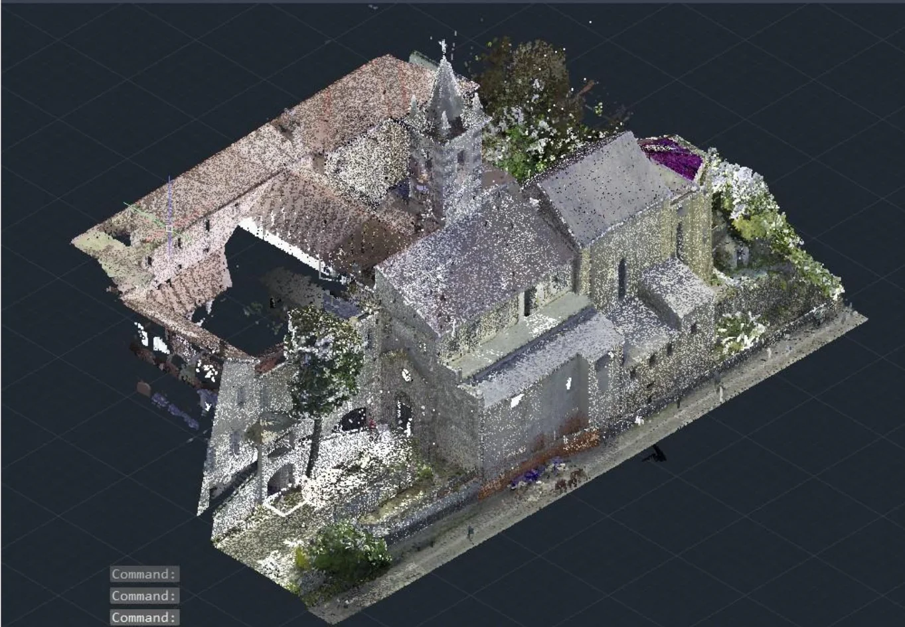

Seismic strengthening
Vulnerability assessment and strengthening design, from masonry houses to framed buildings.
- Tie beams and wall anchoring
- Strengthening jack-arch floors
- Jacketing and FRP
We make older buildings safer in earthquakes, warmer in winter and better to live in, without losing what makes them special.
Every job starts with a visit and an assessment. Then we know where to intervene, and where not to.
Vulnerability assessment and strengthening design, from masonry houses to framed buildings.
A home that stays warm in winter and cool in summer.
Keeping what is valuable, with minimum intervention.
Renovation that does not weaken the structure.

Existing-condition drawings, solid models and ANSYS, energy and daylight simulation, BIM.
See what we do →My interest started at home: when a mezzanine was added to my family's steel-framed house, I assessed it and found that several columns lacked capacity.
I am Parisa Ghasemzadeh, a structural engineer focused on the seismic assessment and strengthening of existing and historic buildings. I studied civil engineering at Urmia University and completed an MSc in Engineering for Building Retrofitting at the University of Genoa, Italy.
Like Iran, Italy has both earthquakes and a vast stock of old buildings. There I learned to understand a building through careful modelling, and then make it safe and efficient with the minimum necessary intervention. I founded Nowkhesht in Urmia to bring that experience to the homes and buildings of my city.
Studies of valuable buildings: what they have, what damage they have suffered, and how they can stay safe and come back to life.

A building by Jahangir Darvish (1969–70) with a column-free hall of about 1,350 m². Survey, diagnosis, new use, design proposal and seismic retrofit.
Read the case study →
Seismic assessment of a medieval stone tower: point cloud, 3D model, nonlinear and pushover analysis in ANSYS, and a compatible intervention proposal. Grade 30/30.
Read the case study →Assessing the effect of land subsidence on the structural health of the northern bazaar of Naqsh-e Jahan Square (UNESCO World Heritage) and the Qeysarieh Gate in Isfahan, through numerical modelling. University of Genoa.
Fill in the form and choose how to send it. The message is prepared for you; you only need to press send.
Nothing in this form is stored on the website. It goes straight to us.